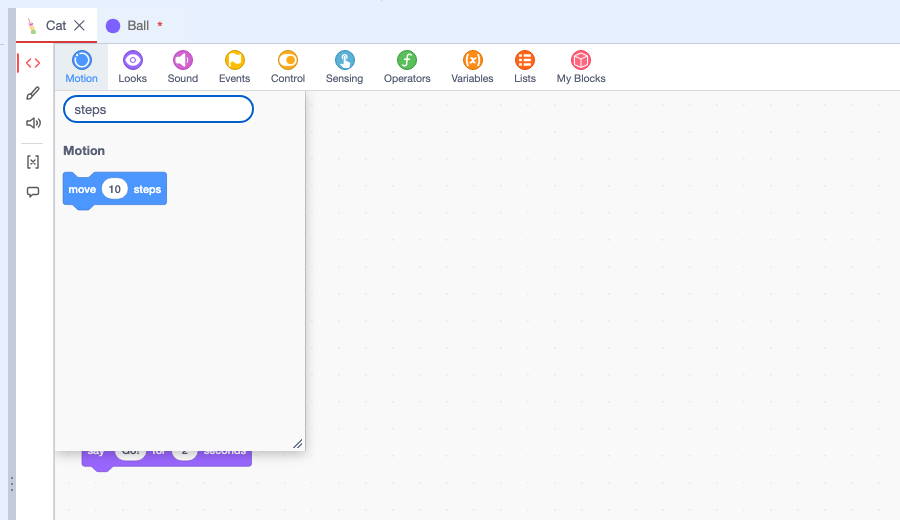
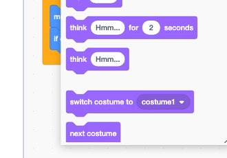
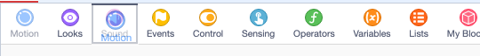
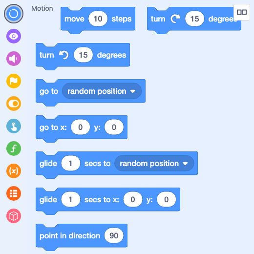
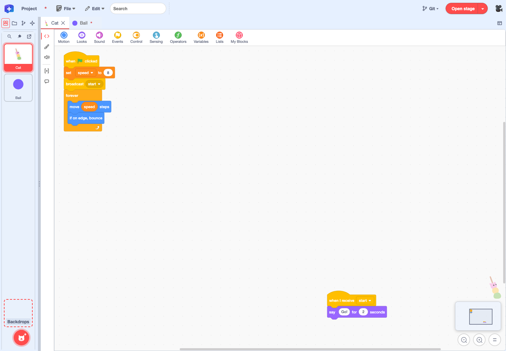

Feature guide 6/12 · Updated November 14, 2026
Find, place and organize blocks
Find blocks in the horizontal palette at the top of the code area and place them. Move around long code with the minimap, and tidy it up with context menus.
6.1 Place blocks from the horizontal palette
In the Plus layout, the categories are lined up horizontally at the top of the code area, in this order: "Motion", "Looks", "Sound", "Events", "Control", "Sensing", "Operators", "Variables", "Lists", and "My Blocks". Adding an extension adds its category as well. Variable and list blocks are split into "Variables" and "Lists".
Click a category to open a flyout of its blocks below it. Drag the block you want into the code area. To close the flyout, press Esc or click outside it. Each category remembers its flyout's scroll position.
Normally you cannot switch the palette between horizontal and vertical display. If you open the editor with twPlusHorizontalBlockPalette=1 added to the URL, you can right-click the palette to switch between horizontal and vertical display. Your custom category order carries over when you switch.
6.2 Search for blocks within a palette category
Type in "Search blocks" at the top of the flyout to filter the category's headings and block labels by partial match. It works with IME input too, and you can drag filtered blocks straight into the code area. When nothing matches, "No matching blocks" is shown.

To find blocks used in the project, use the project-wide search in the menu bar.
6.3 Resize a category flyout
Drag the diagonal lines at the bottom right of the flyout to change its width and height. The size is saved in the browser for each category. When the pane or screen is narrow, the flyout fits within the available space, and it opens at the saved size again once there is enough room.

On a large screen, if you want the palette always visible, you can also open the block palette in a separate window.
6.4 Reorder the categories
Press and hold a category, then release it on the frame that marks the destination to reorder it. While you drag, a preview of the category follows the pointer. Release it outside the palette or press Esc to cancel. Reloading the page restores the default order.

6.5 Open the block palette in a separate window
Choose "Open block palette in another window" from "Editor panel layout" to move the horizontal palette into a separate browser window. Choose a category with the round category buttons on the left, then drag blocks into the editor's code area. The "Block palette layout" button at the top right shows the current arrangement as an icon. Press it to switch the arrangement with "Arrange horizontally" and "Arrange vertically", or choose "Return this panel to the editor" to bring the palette back into the editor.

Palette in a separate window · Round category buttons · Showing the arrangement
6.6 Delete blocks by dropping them on the palette
When you drag a block from the code area onto the palette, a trash can appears to show that releasing it there will delete it. The same happens when you drag back a block you just took from the palette. If you move it back to the code area without releasing, nothing is deleted.
6.7 Move around long code with the minimap and zoom
In the Plus layout, the minimap at the bottom right of the code area gives an overview of where all of the open sprite's blocks are. The minimap and the buttons below it appear only while the pointer is over the code area. The frame in the minimap is the area currently in view. To move to distant blocks, click the destination in the minimap or drag the frame. Use the buttons below it to zoom out, zoom in, or reset the zoom.

To hide the minimap, specify twPlusWorkspaceMinimap=0.
Minimap controls · Zoom and placement · Showing it on the hovered panel
6.9 Rearrange code and copy it to another sprite
Switch the code layout view
Right-click empty space in the code area and choose "Normal layout view", "Z layout view", or "N layout view" from "Change code layout view". The current view has a check mark. Use these views when you want to read scripts that are far apart in order.
- Z layout view: Scripts whose top edges are at about the same height are treated as one row. The rows are followed from the top, and within a row the scripts are followed from left to right.
- N layout view: Scripts whose left edges are at about the same position are treated as one column. The columns are followed from the left, and within a column the scripts are followed from top to bottom.
Both views show the scripts packed in a single vertical column, in the order they were followed. Changing the view does not change the positions of the blocks in the project or the edit history. Switch back to "Normal layout view" to edit the blocks in their original positions.
Rearrange code blocks
To actually rearrange block positions, use "Rearrange Code Blocks" in the "Edit" menu. For the scripts in the open code tab, choose an "Order" ("Z · by row" or "N · by column") and a "Direction" ("Vertical" or "Horizontal"), and a preview of the new arrangement appears in the dialog. Confirm with "Rearrange". The order is worked out the same way as in the views above; "Vertical" lines the scripts up in a single column and "Horizontal" in a single row, evenly spaced. A single "Undo" reverts the rearrangement. The steps are also illustrated in the Ball Demo tutorial.
Copy blocks into another sprite's code
Split the panel or open a code panel in a separate window so that the code tabs of two sprites, the source and the destination, are side by side. Drag a block from one code area and drop it in the other to copy it into that sprite. Connected blocks are copied as a whole script, and the original blocks stay where they were, still connected. In the destination, "Undo" cancels the copy. Press Esc while dragging to stop without copying.
Code layout views and rearranging · Moving the view switch to the workspace menu · Copying between code tabs